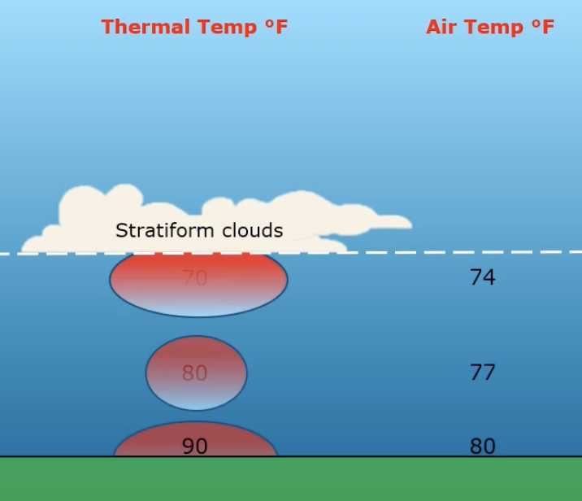
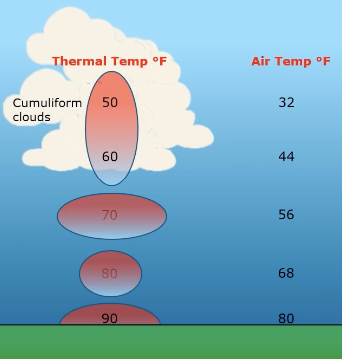

Weather
Why air rises, where storms come from, what fronts and fog do, and the hazards that matter most to a VFR pilot.
Stability & lapse rate
Lapse rate = how rapidly air cools as it rises (standard ≈ 2 °C per 1,000 ft). A steep lapse rate makes air unstable. "Stable" means a lack of vertical movement.
Stable air → stratus
- Stratiform (layered) clouds
- Poor visibility
- Steady, continuous precipitation
- Smooth air

Unstable air → cumulus
- Cumuliform (puffy) clouds
- Good visibility
- Showery precipitation
- Turbulence

Forms where the temperature cools to the dew point — about 400 ft per 1 °C of temperature/dew-point spread.
Pressure systems
"High to low, look out below" — flying into lower pressure (or colder air) without re-setting the altimeter means you're lower than indicated.
Thunderstorms
Ingredients — you need all three:
- Sufficient moisture
- Lifting action (a trigger)
- Unstable air
Fronts
A front is a boundary between two air masses (four types below). The key clue: crossing any front, you'll notice a wind-direction change.
Fog & temperature inversions
| Fog type | How it forms |
|---|---|
| Radiation fog | Ground cools below the air above it (clear, calm nights — usually after sunset). |
| Advection fog | Wind carries moist air over a cooler surface (e.g. cool water). |
| Upslope fog | Moist air is forced up rising terrain (mountain fog). |
Warm air sitting on top of cold air → stable air, poor visibility, fog — pollutants and moisture get trapped underneath. A high-pressure system keeps that air pressed down.
Jet stream
- A narrow band of very strong winds near the tropopause — the top of the troposphere, where temperature stops decreasing.
- Flows generally west → east.
- Forms along strong temperature boundaries between air masses — so it's stronger and dips farther south in winter.
- Often marked by long streaks of cirrus clouds.
- Can bring clear-air turbulence (CAT).
Other hazards
- Wind shear = a sudden change in wind speed/direction. It can occur at all altitudes, is associated with temperature inversions, and is likely if winds at 2,000–4,000 ft are 25 kts or more.
- Structural (airframe) icing needs visible moisture and temperatures at/below freezing. By contrast, carburetor icing does not need visible moisture — just high humidity (see Systems).